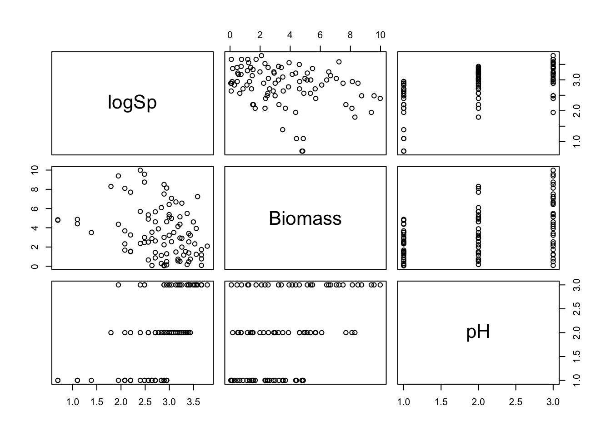
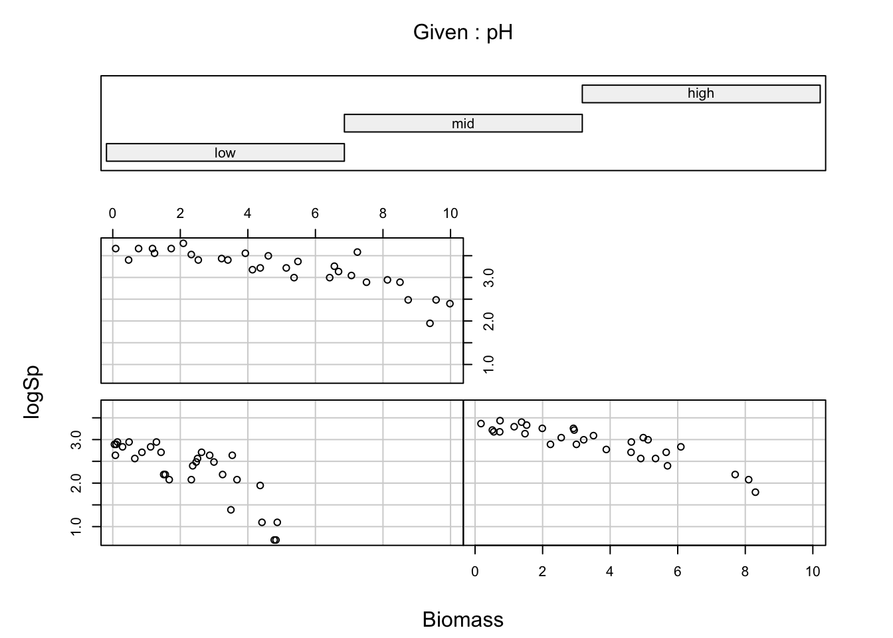
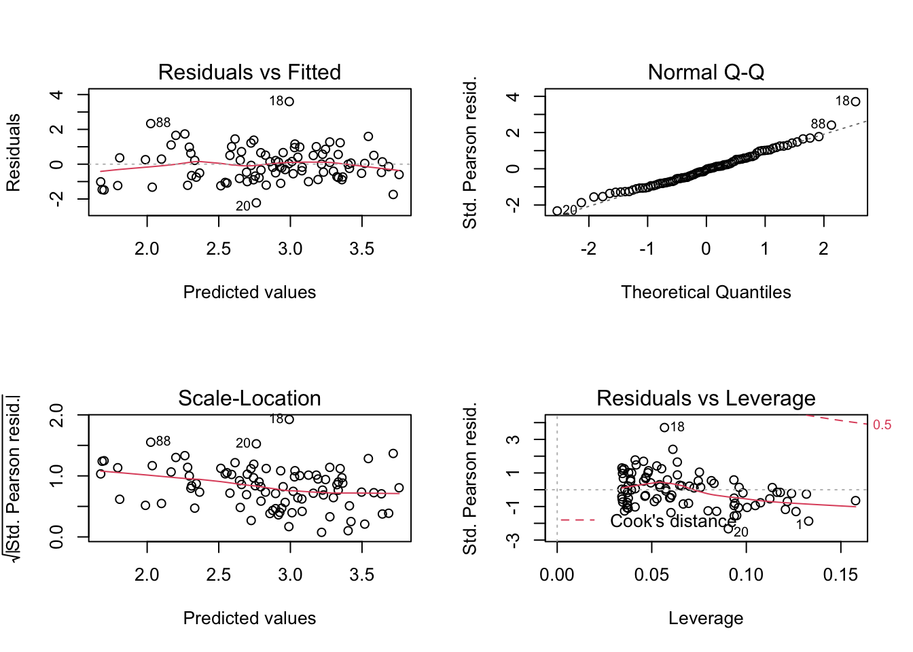
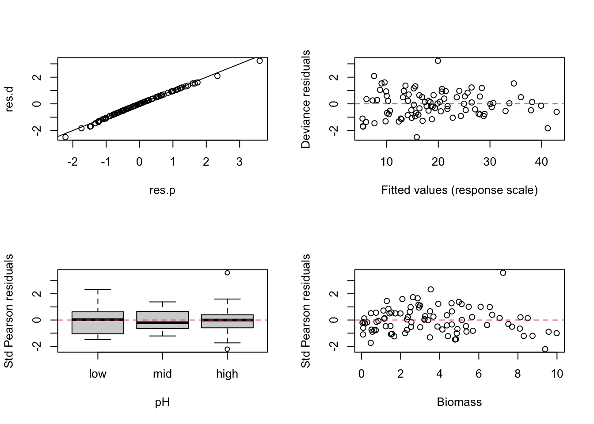
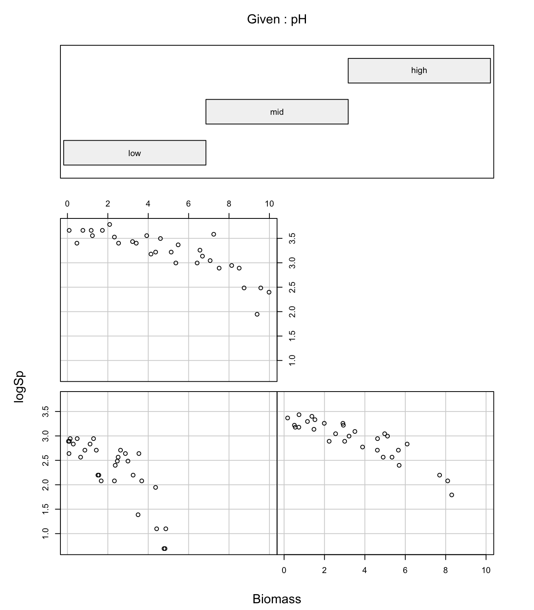
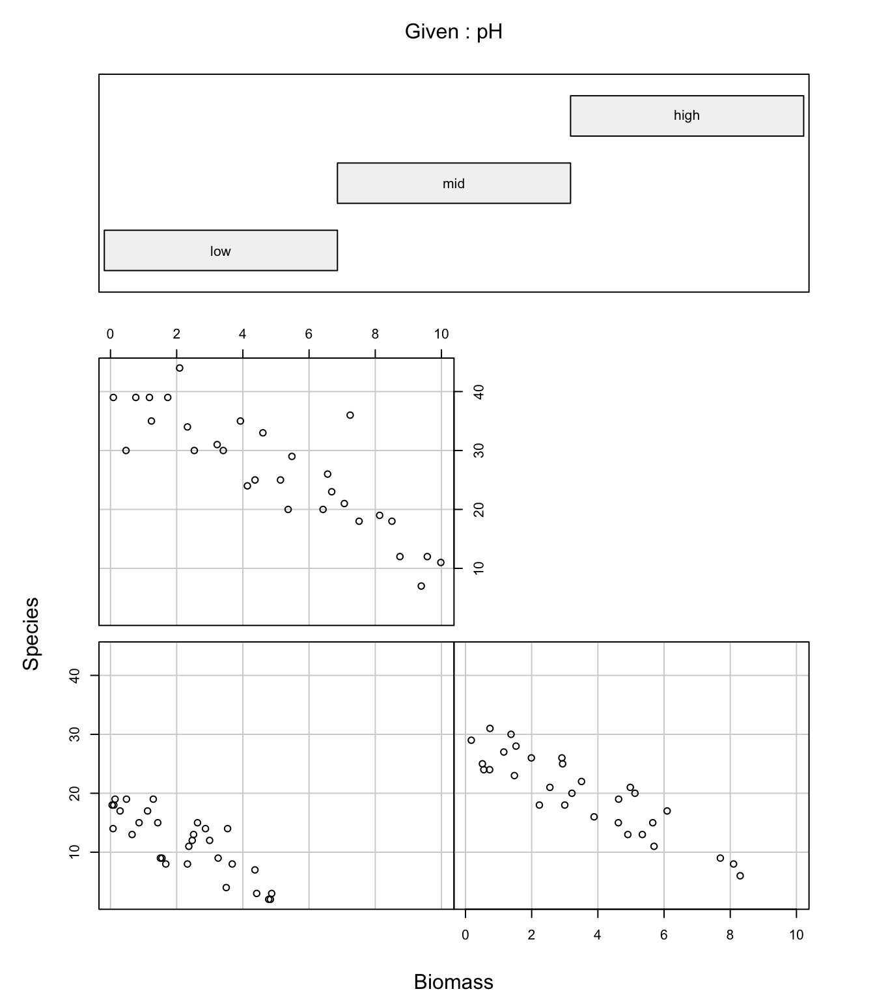
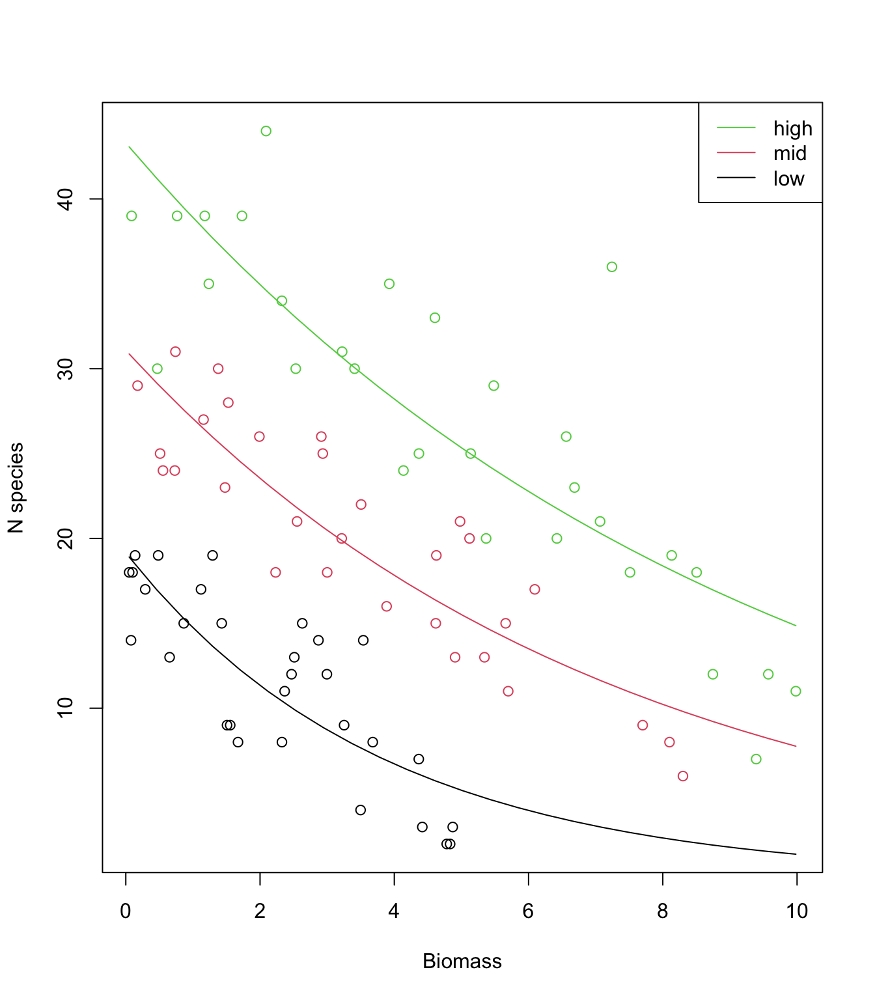
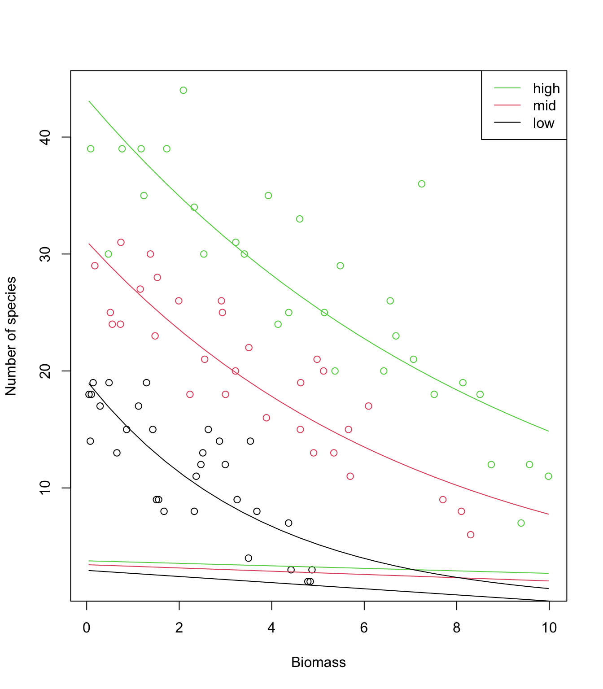

Exercise Solutions
Exercise: Poisson GLM - predicting species richness
The data for this exercise were collected during an experiment which investigated the relationship between the number of plant species and plant biomass grown in plots with 3 controlled pH treatments: low, medium and high pH. The research seeks to find out if increasing biomass has an effect on species richness, and if this effect could be modulated by pH. Therefore, Species is the response variable and pH and Biomass are explanatory variables. Because the number of species is a count (positive and integer), we will attempt to fit a Poisson distribution to these data.
1. As in previous exercises, either create a new R script (perhaps call it GLM_Poisson) or continue with your previous R script in your RStudio Project. Again, make sure you include any metadata you feel is appropriate (title, description of task, date of creation etc) and don’t forget to comment out your metadata with a # at the beginning of the line.
2. Import the data file ‘species.txt’ into R and take a look at the structure of this dataframe. Start with an initial data exploration (using pairs() and coplot()?). Do you see any imbalance of concern between the predictors? Do you foresee any problem for the model to answer the initial question?
- Hints:
- the Poisson model uses a log-link, therefore the equation of the model (the linear predictor) will predict the expected number of plant species on the log scale.
- for a corresponding data exploration it would make sense to use the log of the response.
- check that the format of pH is appropriate and that the reference level is what you want.
- restrict the plot to the variables you actually need
- an effective way of doing this is to store the names of the variables of interest in a vector
VOI<- c("Var1", "Var2", ...) - and then use the naming method for subsetting the data set
Mydata[, VOI]
sp<- read.table(file= "./data/species.txt", header= TRUE)
str(sp)
## 'data.frame': 90 obs. of 3 variables:
## $ pH : chr "high" "high" "high" "high" ...
## $ Biomass: num 0.469 1.731 2.09 3.926 4.367 ...
## $ Species: int 30 39 44 35 25 29 23 18 19 12 ...
sp$logSp<- log(sp$Species)
sp$pH<- factor(sp$pH, levels= c("low", "mid", "high"))
VOI<- c("logSp", "Biomass", "pH")
pairs(sp[, VOI])
# Biomass tends to increase with pH, which could generate
# some collinearity between these explanatory variables in a model.
# but still plenty of variation in Biomass within each pH,
# so hopefully this won't be an issue.
coplot(logSp ~ Biomass | pH, data= sp)
# the relationships look clean and well distinct between treatments,
# supporting the idea of an interaction.
# looking promising.
3. To warm up, let’s start with a simple Poisson GLM (using glm) including only Biomass as a predictor. Hints: + take some time to think what the appropriate response variable is! + if in doubt, make sure to ask someone to help clear this with you. + remember to specify the assumed distribution of the data in glm()
sp.glm1<- glm(Species ~ Biomass, family= poisson, data= sp)
4. Obtain summaries of the model output using the summary() function. Make sure you understand the mathematical and biological interpretation of the model, by writing down the complete model on paper.
summary(sp.glm1)
##
## Call:
## glm(formula = Species ~ Biomass, family = poisson, data = sp)
##
## Deviance Residuals:
## Min 1Q Median 3Q Max
## -4.7703 -1.5994 -0.1025 1.2722 4.5433
##
## Coefficients:
## Estimate Std. Error z value Pr(>|z|)
## (Intercept) 3.184094 0.039159 81.31 < 2e-16 ***
## Biomass -0.064441 0.009838 -6.55 5.74e-11 ***
## ---
## Signif. codes: 0 '***' 0.001 '**' 0.01 '*' 0.05 '.' 0.1 ' ' 1
##
## (Dispersion parameter for poisson family taken to be 1)
##
## Null deviance: 452.35 on 89 degrees of freedom
## Residual deviance: 407.67 on 88 degrees of freedom
## AIC: 830.86
##
## Number of Fisher Scoring iterations: 4
# Model description:
# Species_i ~ Poisson(mu_i)
# log(mu_i) = 3.18 - 0.064*Biomass_i
5. According to this model, what would be the predicted value (by hand) on the link scale log(mu) when Biomass= 5? What would this become on the response scale, i.e. the number of species?
# On the link scale:
3.18 - 0.064*5 # 2.86
## [1] 2.86
# On the response scale (species count):
exp(3.18 - 0.064*5) # 17.46
## [1] 17.46153
6. Now, specify a more useful Poisson GLM (using glm) to match the stated research questions.
sp.glm2<- glm(Species ~ Biomass * pH, family= poisson, data= sp)
7. Obtain summaries of the model output using the summary() and the ANOVA of the model. Which of the drop1() or anova() functions would you choose to use if you wanted (A) to look at deviance components or (B) to do model simplification? Is the effect of the interaction significant?
summary(sp.glm2)
##
## Call:
## glm(formula = Species ~ Biomass * pH, family = poisson, data = sp)
##
## Deviance Residuals:
## Min 1Q Median 3Q Max
## -2.4978 -0.7485 -0.0402 0.5575 3.2297
##
## Coefficients:
## Estimate Std. Error z value Pr(>|z|)
## (Intercept) 2.95255 0.08240 35.833 < 2e-16 ***
## Biomass -0.26216 0.03803 -6.893 5.47e-12 ***
## pHmid 0.48411 0.10723 4.515 6.34e-06 ***
## pHhigh 0.81557 0.10284 7.931 2.18e-15 ***
## Biomass:pHmid 0.12314 0.04270 2.884 0.003927 **
## Biomass:pHhigh 0.15503 0.04003 3.873 0.000108 ***
## ---
## Signif. codes: 0 '***' 0.001 '**' 0.01 '*' 0.05 '.' 0.1 ' ' 1
##
## (Dispersion parameter for poisson family taken to be 1)
##
## Null deviance: 452.346 on 89 degrees of freedom
## Residual deviance: 83.201 on 84 degrees of freedom
## AIC: 514.39
##
## Number of Fisher Scoring iterations: 4
anova(sp.glm2, test= "Chisq")
## Analysis of Deviance Table
##
## Model: poisson, link: log
##
## Response: Species
##
## Terms added sequentially (first to last)
##
##
## Df Deviance Resid. Df Resid. Dev Pr(>Chi)
## NULL 89 452.35
## Biomass 1 44.673 88 407.67 2.328e-11 ***
## pH 2 308.431 86 99.24 < 2.2e-16 ***
## Biomass:pH 2 16.040 84 83.20 0.0003288 ***
## ---
## Signif. codes: 0 '***' 0.001 '**' 0.01 '*' 0.05 '.' 0.1 ' ' 1
# anova is useful for getting an idea of the relative contributions
# of each term, but beware that order does matter for all but the last term!
# drop1 would provide the same answer in this case, since there are
# no other interactions involved (and interactions are always last).
# In general this would be the method of choice if our purpose is
# to perform model simplification.
drop1(sp.glm2, test= "Chisq")
## Single term deletions
##
## Model:
## Species ~ Biomass * pH
## Df Deviance AIC LRT Pr(>Chi)
## <none> 83.201 514.39
## Biomass:pH 2 99.242 526.43 16.04 0.0003288 ***
## ---
## Signif. codes: 0 '***' 0.001 '**' 0.01 '*' 0.05 '.' 0.1 ' ' 1
# the ANOVA table provides a global test across pH levels.
# However the significance of the interactions is also unambiguous
# from the summary table, in this case, although the null hypothesis
# is different (coefficient different from zero in the latter
# vs. significant proportion of variation explained in the former).
8. Make sure you understand the individual components of the two types of summaries, null hypotheses, and the mathematical and biological interpretation of the different coefficients (i.e. would you be able to reconstruct and to use the model formula to make predictions? In doubt, try it and seek assistance!). Any indication of overdispersion (Hint: check residual deviance and degrees of freedom)
9. Is everything significant? Which of the summaries above do you prefer to use, if you would like to explain the predictions, or test hypotheses, or perform model selection?
10. Check for collinearity using the vif() function in the car package. What do you think?
library(car)
vif(sp.glm2)
## GVIF Df GVIF^(1/(2*Df))
## Biomass 16.250598 1 4.031203
## pH 7.218052 2 1.639098
## Biomass:pH 57.090096 2 2.748781
# GVIF is high for all the terms.
# This is expected though, because all terms are part of an interaction.
# Any change in one coefficient will have a strong impact on the others
# This might be exacerbated by the pre-existing correlation between
# the predictors. But all components are very clearly needed here.
11. Validate the model using the standard residuals diagnostic plots
par(mfrow= c(2, 2))
plot(sp.glm2)
# nothing particularly bad...
# the variance of the standardized residuals ("Pearson") tends to decrease
# slightly, when it should be constant (underdispersion).
# a few observations poorly predicted (18, 20) and slight
# overestimation of the smaller values (left end of top-left graph),
# just to be picky.
# There is no expectation that the residuals should be normally distributed
# (thus QQplot not particularly useful)
# we can produce more residual plots if desired:
# extract various residuals and plot
res.p<- resid(sp.glm2, type= "pearson")
res.d<- resid(sp.glm2, type= "deviance")
fit<- fitted(sp.glm2) # on the response scale
plot(res.p, res.d); abline(0,1) # deviance against Std Pearson residuals
# quite similar in this model (no overdispersion, moderate underdispersion)
plot(fit, res.d, ylab= "Deviance residuals", xlab= "Fitted values (response scale)")
abline(h= 0, col= 2, lty= 2)
# residuals against the predictors:
plot(sp$pH, res.p, ylab= "Std Pearson residuals", xlab= "pH")
abline(h= 0, col= 2, lty= 2)
# low pH plots are more variable
plot(sp$Biomass, res.p, ylab= "Std Pearson residuals", xlab= "Biomass")
abline(h= 0, col= 2, lty= 2)
# Species richness over-predicted for highest and lowest Biomass plots
# Few cases: could be by chance?
12. Use predict() with the argument type= "response" to obtain the fitted values on the original (response) scale. Plot a fitted line for the relationship between number of species and biomass for each level of pH. Why are the lines not straight?
coplot(logSp ~ Biomass | pH, data= sp)
coplot(Species ~ Biomass | pH, data= sp)
sp.glm2<- glm(Species ~ Biomass * pH, family= poisson, data= sp)
par(mfrow= c(1, 1))
# create a sequence of increasing Biomass
Biomass.seq<- seq(from= min(sp$Biomass), to= max(sp$Biomass), l= 25)
# predict for a range of biomass values and a low pH
MyData1<- data.frame(Biomass= Biomass.seq, pH= "low")
# predict for a range of biomass values and a mid pH
MyData2<- data.frame(Biomass= Biomass.seq, pH= "mid")
# predict for a range of biomass values and a high pH
MyData3<- data.frame(Biomass= Biomass.seq, pH= "high")
P.low<- predict(sp.glm2, newdata= MyData1, type= "response")
P.mid<- predict(sp.glm2, newdata= MyData2, type= "response")
P.high<- predict(sp.glm2, newdata= MyData3, type= "response")
plot(sp$Biomass, sp$Species, col= sp$pH, xlab= "Biomass", ylab= "N species")
# when pH is converted to numeric,
# you get 1 for "low", 2 for "med" and 3 for "high"
# color 1 means black in R
# color 2 means red in R
# color 3 means green in R
lines(MyData1$Biomass, P.low, lty= 1, col= 1)
lines(MyData2$Biomass, P.mid, lty= 1, col= 2)
lines(MyData3$Biomass, P.high, lty= 1, col= 3)
legend("topright",
legend= c("high", "mid", "low"),
col= c(3:1),
lty= c(1, 1, 1),
lwd= c(1, 1, 1))
13. (Optional) Use predict again, but this time obtain the fitted values on the scale of the linear predictor type= "link". Plot again and compare with the previous graph: what is happening? How would you back-transform these values predicted on the link scale to plot them on the response scale again?
P.low<- predict(sp.glm2, newdata= MyData1, type= "link")
P.mid<- predict(sp.glm2, newdata= MyData2, type= "link")
P.high<- predict(sp.glm2, newdata= MyData3, type= "link")
plot(sp$Biomass, sp$Species, col= sp$pH, xlab= "Biomass", ylab= "Number of species")
lines(MyData1$Biomass, P.low, lty= 1, col= 1)
lines(MyData2$Biomass, P.mid, lty= 1, col= 2)
lines(MyData3$Biomass, P.high, lty= 1, col= 3)
# lines are straight and appear in the wrong place!
# Because they are on the link scale (observations are on the response scale)
# back-transform the predictions to make them on the response scale
# (note the 'exp')
lines(MyData1$Biomass, exp(P.low ), lty= 1, col= 1)
lines(MyData2$Biomass, exp(P.mid ), lty= 1, col= 2)
lines(MyData3$Biomass, exp(P.high), lty= 1, col= 3)
# Better?
legend("topright",
legend= c("high", "mid", "low"),
col= c(3:1),
lty= c(1, 1, 1),
lwd= c(1, 1, 1))
14. (Optional but recommended) Use predict again, but this time obtain the fitted values and their standard errors on the scale of the linear predictor. From these, calculate confidence intervals for the fitted values, and plot them together with the data, after back-transforming the fitted values and intervals on the response scale.
- Suggested approach:
- plot the raw data (one colour per pH)
- create a
data.framecalledXcontaining the data to predict for: as sequence of increasing Biomass and the pH of your choice - use
predict()with the appropriate optionstype= "link", se.fit= TRUEto obtain the fitted values on the link scale and for being able to calculate the confidence intervals later. Store in objectZ. - plot fitted values, extracted using
Z$fit, against the Biomass sequence. Do not forget to back-transform on the response scale. - plot the upper bound of the 95% CI (fitted values + 1.96*se), extracted using
Z$fitandZ$se.fit, against the Biomass sequence. Do not forget to back-transform on the response scale. - plot the lower bound of the 95% CI (fitted values - 1.96*se), extracted using
Z$fitandZ$se.fit, against the Biomass sequence. Do not forget to back-transform on the response scale. - repeat for other pH values.
coplot(logSp ~ Biomass | pH, data= sp)
sp.glm2<- glm(Species ~ Biomass * pH, family= poisson, data= sp)
P.low<- predict(sp.glm2, newdata= MyData1, type= "link", se.fit= T)
P.mid<- predict(sp.glm2, newdata= MyData2, type= "link", se.fit= T)
P.high<- predict(sp.glm2, newdata= MyData3, type= "link", se.fit= T)
plot(sp$Biomass, sp$Species, col= sp$pH, xlab= "Biomass", ylab= "Number of species")
# back-transform the predictions to make them on the response scale
# (note the 'exp')
lines(MyData1$Biomass, exp(P.low$fit ), lty= 1, col= 1)
lines(MyData2$Biomass, exp(P.mid$fit ), lty= 1, col= 2)
lines(MyData3$Biomass, exp(P.high$fit), lty= 1, col= 3)
# same for the lower bound of the 95% CI
lines(MyData1$Biomass, exp(P.low$fit - 1.96*P.low$se.fit ), lty= 3, col= 1)
lines(MyData2$Biomass, exp(P.mid$fit - 1.96*P.mid$se.fit ), lty= 3, col= 2)
lines(MyData3$Biomass, exp(P.high$fit - 1.96*P.high$se.fit), lty= 3, col= 3)
# now the upper bound of the 95% CI
lines(MyData1$Biomass, exp(P.low$fit + 1.96*P.low$se.fit ), lty= 3, col= 1)
lines(MyData2$Biomass, exp(P.mid$fit + 1.96*P.mid$se.fit ), lty= 3, col= 2)
lines(MyData3$Biomass, exp(P.high$fit + 1.96*P.high$se.fit), lty= 3, col= 3)
legend("topright",
legend= c("high", "mid", "low"),
col= c(3:1),
lty= c(1, 1, 1),
lwd= c(1, 1, 1))
15. Looking at the data and model fits, any idea why expected species richness for the largest values of biomass tends to be biased high? How satisfied are you with the model? Have we learned anything from it, about species diversity in relation to pH and biomass?
# The data show a very steep decline in species richness towards zero,
# as biomass increases.
# The log-link allows to transform the straight lines (on the link scale)
# into curves (on the response scale), while ensuring that predictions
# are always positive. But the log link doesn't allow enough flexibility
# for the decline to happen as fast as it does in the data
# while remaining positive for any value of biomass.
# The model (a straight line for each pH) is too simple to capture this
# level of detail in the data, and hence is biased.
# However it does a pretty good job overall, and can be trusted to
# make robust inference about the general trends.
# Note that the interaction is not obvious on the response scale,
# as the curves look quite "parallel". It is indeed one of the
# peculiarities of transformations (like the log), that parallel lines
# on one scale will not be so on the other scale.
# Caution is therefore required in interpreting effects from the
# summary of the model directly, and plotting on the response scale
# is critical before drawing any conclusion!
End of the Poisson GLM - predicting species richness exercise